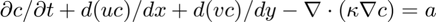

function [UserVar,c1,lambda]=TracerConservationEquation(UserVar,CtrlVar,MUA,dt,c0,u0,v0,a0,u1,v1,a1,kappa,BCsTracer)
Solves the linear tracer conservation equation for the tracer c on the form:


The natural boundary condition is
It gives c1 at the end of the time step, i.e. time=time+dt
c is solved implicitly using the theta method ie: \Delta c / Delta t = \Theta d c_1/dt + (1-\Theta) d c_0/dt
with theta=CtrlVar.theta; and SUPG with tauSUPG=CalcSUPGtau(CtrlVar,MUA,u0,v0,dt);
Boundary conditions: The BCs are identical to define thickness boundary conditions. So define the relevant BCs as you were defining BCs for h and these will be used for c.
[UserVar,kv,rh]=TracerConservationEquationAssembly(UserVar,CtrlVar,MUA,dt,c0,u0,v0,a0,u1,v1,a1,kappa); % Now apply BCs. % Note: When defining tracer boundary conditions, use the thickness fields (h) in the BCs structure % for that purpose. % MLC=BCs2MLC(CtrlVar,MUA,BCsTracer); L=MLC.hL ; Lrhs=MLC.hRhs ; lambda=Lrhs*0; [c1,lambda]=solveKApe(kv,L,rh,Lrhs,c0,lambda,CtrlVar); c1=full(c1);
end